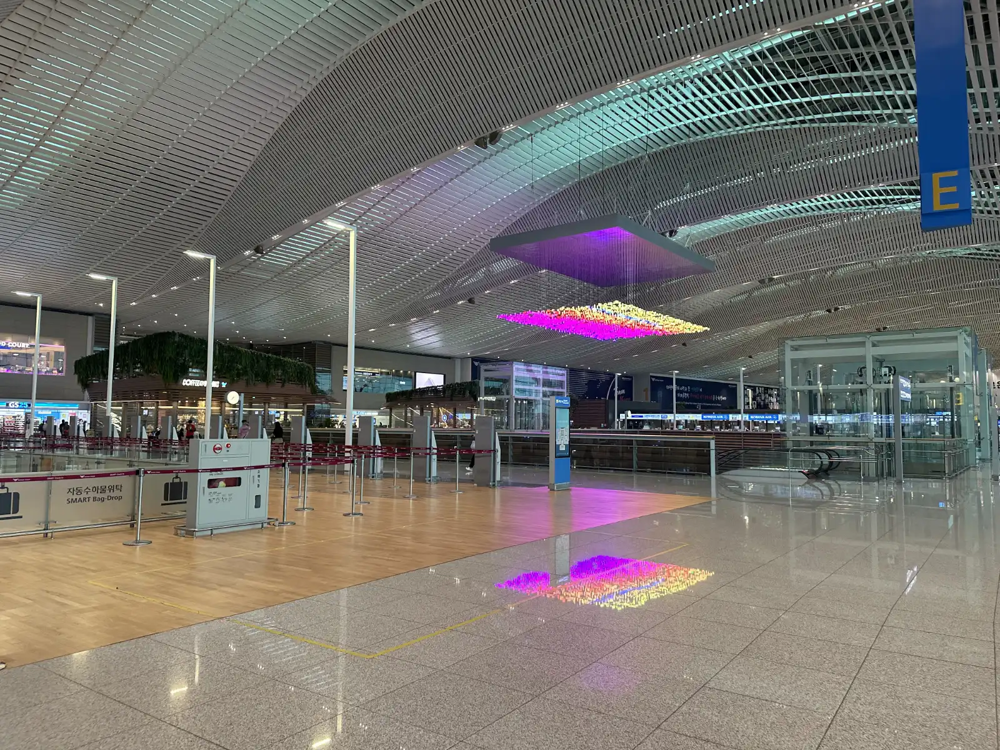
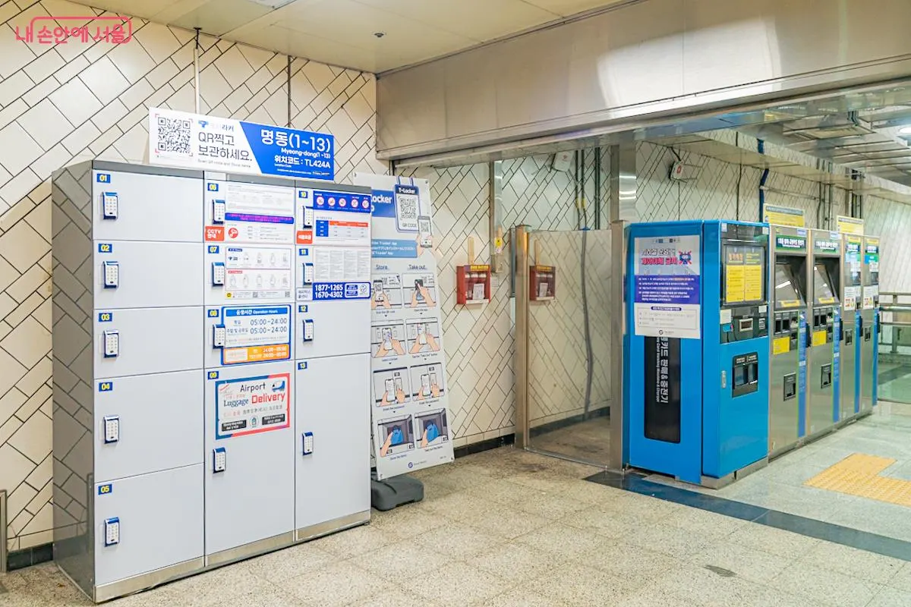
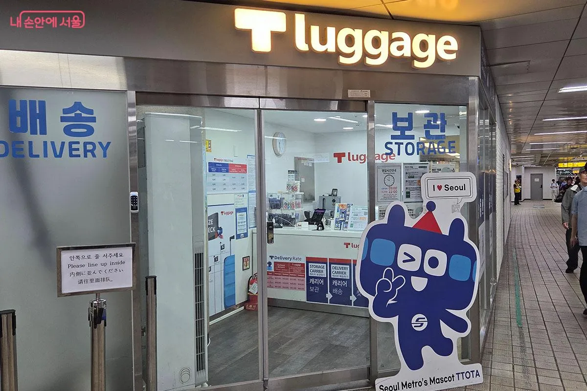
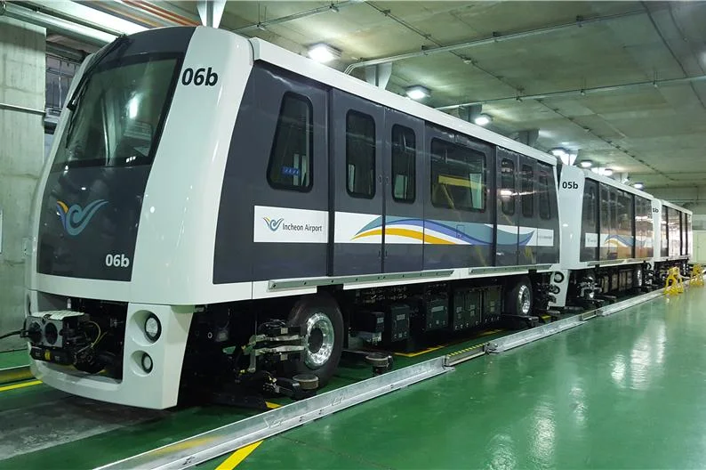

Guide de départ de l’aéroport d’Incheon
Pour un vol international au départ d’Incheon, prévoyez d’arriver au bon terminal environ trois heures avant le décollage. Accordez-vous davantage de temps si votre compagnie le recommande, si vous avez des bagages spéciaux ou si vous devez effectuer des démarches de détaxe.
Après avoir libéré votre chambre, il vous reste peut-être une demi-journée pour découvrir Séoul. Le temps dont vous disposez dépend de votre vol, de votre hébergement et du trajet prévu vers l’aéroport.

Votre dernier jour en Corée
Un vol tôt le matin et un vol en soirée ne laissent pas du tout les mêmes possibilités pour votre dernière journée en Corée.
Si vous partez tôt, préparez vos bagages la veille et organisez votre trajet vers l’aéroport à l’avance. Vous risquez d’avoir peu de marge entre le départ de votre hébergement et l’arrivée au comptoir d’enregistrement.
Avec un vol l’après-midi ou le soir, il vous reste peut-être le temps de prendre un petit-déjeuner, de faire quelques achats ou de vous promener une dernière fois dans Séoul. Demandez à votre hôtel s’il peut garder vos bagages après votre départ, et choisissez un endroit d’où vous pourrez revenir sans devoir traverser la ville en urgence.
Si votre vol permet un enregistrement au City Airport Terminal de la gare de Séoul, vous pourrez peut-être y déposer vos bagages en soute avant de poursuivre votre journée dans la capitale.
Les étapes de votre départ
- Vérifiez votre vol, votre terminal de départ et l’heure limite d’enregistrement fixée par votre compagnie.
- Libérez votre chambre et organisez la consigne de vos bagages ou, si vous remplissez les conditions, l’enregistrement et le contrôle d’immigration de sortie au City Airport Terminal.
- Rejoignez le bon terminal de l’aéroport.
- Terminez les formalités d’enregistrement, de dépôt des bagages et de douane encore nécessaires.
- Passez le contrôle de sûreté, puis le contrôle d’immigration de sortie si vous ne l’avez pas déjà effectué au City Airport Terminal.
- Repérez votre porte et soyez prêt avant la fin de l’embarquement.
Si vous souhaitez obtenir un remboursement de taxes à l’aéroport, gardez les achats concernés et les justificatifs à portée de main. Signalez au personnel de votre compagnie les articles éligibles à la détaxe dans vos bagages en soute avant de remettre définitivement votre valise.
Organisez vos dernières activités en fonction de l’heure à laquelle vous devez partir pour l’aéroport. Un vol tardif peut vous offrir plusieurs heures supplémentaires à Séoul, mais cela n’a d’intérêt que si vous pouvez ensuite rejoindre votre terminal de façon fiable.
Terminal 1 ou terminal 2 ?
L’aéroport d’Incheon possède deux terminaux passagers distincts. Dans les deux cas, les départs internationaux se trouvent au 3e étage, mais les bâtiments sont trop éloignés pour passer de l’un à l’autre à pied avec vos bagages.
Vérifiez votre terminal de départ avant de choisir un bus d’aéroport, un train ou un transfert privé.
Vérifiez votre vol, pas seulement votre compagnie aérienne
Consultez d’abord votre billet électronique pour identifier la compagnie qui assure réellement votre vol. C’est particulièrement important si vous avez réservé un vol en partage de code auprès d’une autre compagnie.
Utilisez la recherche officielle des vols au départ d’Incheon pour vérifier :
- Le numéro de vol et l’heure de départ
- Le terminal de départ
- Le comptoir d’enregistrement
- La porte d’embarquement, une fois attribuée
- Le statut actuel du vol
Ne supposez pas que vous quitterez la Corée depuis le terminal où vous êtes arrivé. Vérifiez à nouveau votre vol avant de quitter votre hôtel.
Que faire si vous arrivez au mauvais terminal ?
Si vous descendez au mauvais terminal, vous pouvez encore passer du terminal 1 au terminal 2, ou inversement, en prenant la navette gratuite de l’aéroport ou le train payant de l’Airport Railroad.
Du terminal 1 au terminal 2
Prenez la navette gratuite à l’extérieur, devant la sortie 8 du 3e étage du terminal 1.
Du terminal 2 au terminal 1
Prenez la navette gratuite à l’extérieur, devant la sortie 7 du 3e étage du terminal 2.
L’Airport Railroad relie également les deux terminaux. Prévoyez le temps nécessaire pour rejoindre la gare, attendre le train puis remonter au niveau des départs avec vos bagages.
Vérifiez les horaires en vigueur avant de compter sur l’un de ces services pour un vol très matinal ou tardif.
Si l’heure limite d’enregistrement approche, contactez votre compagnie pendant que vous organisez votre changement de terminal. Arriver au bon terminal avant le décollage ne signifie pas nécessairement que vous pourrez encore vous enregistrer.
Combien de temps à l’avance faut-il arriver à Incheon ?
L’aéroport d’Incheon recommande d’arriver environ trois heures avant un vol international. Il s’agit de votre heure d’arrivée au bon terminal de départ, et non de l’heure à laquelle votre train entre en gare à l’aéroport.
L’heure limite d’enregistrement fixée par votre compagnie est une contrainte distincte. En arrivant juste avant la fermeture du comptoir, vous aurez très peu de marge en cas de problème de bagages, de contrôle de documents ou de retard imprévu.
Calculez vos horaires à rebours à partir du vol
Partez de l’heure de décollage prévue sur votre billet et remontez les différentes étapes du trajet.
- Retranchez le temps prévu à l’aéroport, en prenant trois heures comme point de départ, pour déterminer votre heure d’arrivée souhaitée.
- Estimez le trajet complet de votre hôtel au hall des départs : marche, attente, correspondances et dernier parcours à pied à l’intérieur du terminal.
- Ajoutez une marge raisonnable pour les retards de transport.
- Fixez l’heure à laquelle vous devez quitter votre hôtel avant de prévoir vos dernières visites ou vos achats.
Utilisez le calculateur ci-dessous pour déterminer votre propre heure de départ de l’hôtel plutôt que de suivre un horaire fixe.
Si vous comptez vous enregistrer au City Airport Terminal de la gare de Séoul, organisez-vous plutôt en fonction de son heure limite d’enregistrement, plus précoce. Il vous faudra toujours suffisamment de temps pour le trajet en Express Train et les formalités restantes à l’aéroport.
Quand prévoir davantage de temps
Trois heures constituent un point de départ, et non la garantie que tous les départs demandent autant de temps.
Envisagez de prévoir davantage de temps si :
- Vous voyagez avec de jeunes enfants ou une personne ayant besoin d’assistance.
- Vous transportez des bagages hors format, du matériel de sport ou plusieurs valises.
- Votre compagnie doit vérifier des visas ou d’autres documents de voyage au comptoir.
- Vous devez présenter des achats à la douane pour la détaxe.
- Une forte affluence à l’aéroport ou une circulation routière particulièrement dense est prévue.
Une carte d’embarquement sur téléphone peut simplifier une partie du parcours, mais elle ne dispense pas nécessairement du dépôt des bagages ou des vérifications de documents. Vous devez toujours passer la sûreté, le contrôle d’immigration de sortie et rejoindre votre porte.
Consultez les prévisions d’affluence avant votre départ, puis les informations en temps réel sur les halls de départ le jour même. Ces services permettent d’anticiper les périodes chargées, sans garantir votre temps de passage personnel.
Si votre compagnie recommande d’arriver plus tôt, suivez ses consignes.
Consulter les prévisions d’affluence à l’aéroport
Consulter les temps d’attente en direct dans les halls de départ
Calculateur d’heure de départ
À quelle heure partir pour l’aéroport d’Incheon ?
Saisissez les informations de votre vol et la durée estimée de votre trajet pour déterminer quand quitter votre hébergement. Indiquez la date et l’heure de votre vol en heure de Corée (KST).
Pour un vol tôt le matin, vérifiez que les transports en commun commencent à circuler assez tôt pour vous permettre d’arriver à l’aéroport à l’heure prévue. Sinon, organisez un taxi ou un transfert privé, ou envisagez de passer votre dernière nuit plus près de l’aéroport.
Pour un vol peu après minuit, vous devrez peut-être commencer votre trajet vers l’aéroport dès la veille.
Départ de l’hôtel et consigne à bagages
Plusieurs heures peuvent s’écouler entre le moment où vous libérez votre hébergement et votre départ de Séoul pour Incheon. L’endroit où vous laissez votre valise détermine en partie le temps dont vous pourrez réellement profiter.
Choisissez une consigne adaptée à vos dernières visites et à votre trajet vers l’aéroport. Économiser un peu sur le prix de la consigne vaut rarement un détour à travers Séoul pour récupérer vos bagages.
Laisser vos bagages à l’hôtel
Si votre hôtel garde les bagages après votre départ et que vous comptez rester dans le quartier, les laisser à la réception est généralement la solution la plus simple.
Renseignez-vous auprès de l’hôtel à l’avance :
- Pouvez-vous laisser vos bagages après avoir libéré votre chambre ?
- La consigne est-elle payante ?
- Jusqu’à quelle heure pouvez-vous récupérer vos bagages ?
- Y aura-t-il du personnel à la réception à votre retour ?
Ne supposez pas qu’un appartement, une maison d’hôtes ou un hébergement avec arrivée autonome propose les mêmes services qu’un hôtel avec du personnel sur place.
Si vos dernières activités vous emmènent dans un autre quartier de Séoul, demandez-vous si retourner à l’hôtel avec vos sacs de courses avant de partir à l’aéroport ne constituerait pas un détour inutile.
Gardez sur vous votre passeport, vos médicaments, votre téléphone, votre batterie externe et tout ce dont vous pourriez avoir besoin avant votre vol.
Services de consigne et de livraison de bagages
Séoul offre plusieurs solutions si votre hébergement ne peut pas garder vos bagages ou si vous préférez les récupérer plus près du point de départ de votre trajet vers l’aéroport.
Casiers des stations de métro — T-Locker
De nombreuses stations de métro de Séoul disposent de casiers. Les dimensions annoncées vont de 50 × 30 × 60 cm à 50 × 90 × 60 cm.
Les tarifs habituels pour quatre heures en semaine vont de ₩2,200 à ₩4,400 ; ils sont plus élevés le week-end. Un supplément s’applique au-delà de cette durée.
Vous pouvez déposer et récupérer vos bagages entre 5 h du matin et minuit. Pour les casiers de Seoul Metro, vous pouvez scanner le QR code et utiliser le service web sans installer l’application T-Locker ni créer de compte.
Vérifiez qu’un casier disponible peut accueillir votre valise, roues et poignées comprises. Les moyens de paiement et les consignes d’utilisation peuvent varier selon l’emplacement.

Consignes avec personnel — T-Luggage
T-Luggage propose des consignes avec personnel dans plusieurs grandes stations, dont la gare de Séoul, Hongik University, Myeongdong et Jamsil.
Les tarifs annoncés pour quatre heures vont de ₩3,000 à ₩13,000 selon la taille de la valise et le jour de la semaine.
Les comptoirs T-Luggage de la gare de Séoul, de Hongik University, de Myeongdong et de Jamsil sont ouverts de 9 h à 22 h. Si vous devez récupérer vos bagages avant 9 h, prévoyez une autre solution de consigne.
La gare de Séoul et la station Hongik University sont particulièrement intéressantes si vous comptez prendre l’AREX pour rejoindre l’aéroport.
À la gare de Séoul, le comptoir T-Luggage près de la sortie 1 se trouve du côté du métro. Prévoyez le temps de récupérer vos bagages puis de rejoindre à pied la zone de départ de l’AREX.

Consignes indépendantes
Les consignes commerciales constituent une autre option si les casiers des stations sont pleins ou si vous avez besoin d’horaires d’ouverture plus étendus.
LuggageDot, près de la gare de Séoul, est accessible 24 h/24 et propose des casiers pour des valises allant jusqu’à 32 pouces. La consigne se trouve à environ 287 mètres de la sortie 12, avec des tarifs à partir de ₩1,000 par heure. La borne est utilisable en anglais et accepte le paiement par carte.
Vérifiez les disponibilités, les moyens de paiement et le lieu exact de récupération avant de fixer le programme de votre dernière journée.
Faire livrer vos bagages à l’aéroport d’Incheon
T-Luggage propose aussi une livraison à l’aéroport le jour même depuis certains points de dépôt. Vous pourrez ainsi découvrir Séoul plus librement, sans devoir retourner à la consigne.
Ce service impose toutefois des heures limites de dépôt le matin et des créneaux de récupération à l’aéroport l’après-midi. Il ne convient pas aux vols pour lesquels vous devez récupérer votre valise avant l’heure de livraison confirmée.
Avant de réserver, confirmez votre terminal de départ, l’heure limite de dépôt, la première heure de récupération confirmée et le comptoir de retrait à l’aéroport.
La livraison à l’aéroport ne remplace pas l’enregistrement des bagages auprès de la compagnie. Vous devez récupérer votre valise puis effectuer les formalités requises par votre compagnie.
Si votre valise contient des achats susceptibles d’être contrôlés par la douane pour la détaxe, assurez-vous de pouvoir les récupérer et les présenter avant de terminer le dépôt des bagages.
Consulter les services de consigne et de livraison T-Luggage
Profiter de vos dernières heures
Le programme de votre dernière journée doit suivre votre itinéraire vers l’aéroport plutôt que vous faire traverser Séoul dans les deux sens.
Si vous séjournez à Hongdae et prenez un AREX All-Stop Train, rester dans les quartiers de Hongdae ou de Yeonnam vous permet de récupérer vos bagages près de la station.
Si vous comptez prendre l’AREX Express Train à la gare de Séoul, laisser vos bagages près de la gare peut vous permettre de terminer vos visites ailleurs sans revenir à votre hébergement initial.
Les voyageurs éligibles au City Airport Terminal de la gare de Séoul disposent d’une autre possibilité : s’enregistrer et déposer leurs bagages en soute avant de poursuivre leur journée dans Séoul.
Pour un vol matinal, ou si le délai entre votre départ de l’hôtel et votre trajet vers l’aéroport est court, évitez une consigne supplémentaire et allez directement à l’aéroport.
Utilisez le calculateur d’heure de départ ci-dessus pour déterminer quand commencer votre trajet vers l’aéroport. Remontez encore un peu dans le temps pour pouvoir récupérer vos bagages avant cette heure.
City Airport Terminal de la gare de Séoul
Pour un vol l’après-midi ou le soir, vous pourrez peut-être déposer votre valise à la gare de Séoul dès le matin, profiter du temps restant en ville sans vos bagages en soute, puis prendre l’AREX Express Train vers Incheon plus tard.
Le City Airport Terminal de la gare de Séoul se trouve au niveau B2, dans la partie Airport Railroad de la gare. Les voyageurs qui remplissent les conditions peuvent y effectuer l’enregistrement, le dépôt des bagages et le contrôle d’immigration de sortie.

Qui peut utiliser le City Airport Terminal ?
Avant d’organiser votre dernière journée autour de ce service, assurez-vous de remplir ces trois conditions :
- Vous prenez un vol international au départ d’Incheon le jour même.
- La compagnie qui assure votre vol et le vol lui-même sont éligibles à l’enregistrement au City Airport Terminal.
- Vous disposez d’un billet AREX Express Train de la gare de Séoul à l’aéroport d’Incheon.
Un billet All-Stop Train ou une carte T-money seuls ne donnent pas accès à ce service.
| Compagnie assurant le vol | Terminal de l’aéroport | Vols éligibles |
|---|---|---|
| Jeju Air (7C) | T1 | Vols vers les Amériques, Guam et Saipan exclus |
| Trinity Airways (anciennement T'way Air) (TW) | T1 | Vols vers les Amériques, Guam et Saipan exclus. Vols en partage de code assurés par Trinity Airways acceptés. |
| Eastar Jet (ZE) | T1 | Vols assurés par Eastar Jet |
| Korean Air (KE) | T2 | Y compris les vols en partage de code assurés par Korean Air |
| Asiana Airlines (OZ) | T2 | Y compris les vols en partage de code assurés par Asiana |
| Jin Air (LJ) | T2 | Vols vers les Amériques, Guam et Saipan exclus. Vols en partage de code assurés par Jin Air acceptés. |
| Air Busan (BX) | T2 | Y compris les vols en partage de code assurés par Air Busan |
| Air Seoul (RS) | T2 | Vols vers les Amériques, Guam et Saipan exclus. Vols en partage de code assurés par Air Seoul acceptés. |
La compagnie indiquée sur votre billet peut être différente de celle qui assure réellement le vol. Vérifiez la compagnie opératrice et confirmez votre éligibilité avant de vous rendre à la gare de Séoul.
Les bagages de plus de 150 cm de longueur ne sont pas acceptés au City Airport Terminal. D’autres restrictions de dimensions, de poids et de manutention s’appliquent également. Si vous voyagez avec du matériel de sport, des instruments de musique ou d’autres bagages hors format, vérifiez les restrictions de votre compagnie pour ce terminal avant de vous rendre à la gare de Séoul.
Les voyageurs accompagnés d’animaux ou ayant besoin d’une assistance particulière doivent se renseigner directement auprès de leur compagnie.
Vérifier les compagnies éligibles et les conditions actuelles du service
Enregistrement et contrôle d’immigration de sortie
-
Étape 1 — Acheter votre billet AREX Express Train
Achetez votre billet en ligne ou aux distributeurs du niveau B2 de la gare de Séoul. Utilisez le QR code de votre billet pour accéder à la zone d’enregistrement du City Airport Terminal.
Choisissez une heure de départ du train compatible avec vos dernières activités et qui vous laisse assez de temps à Incheon.
-
Étape 2 — Vous enregistrer et déposer vos bagages
Présentez-vous au comptoir de votre compagnie avec votre passeport et les informations de votre vol. Enregistrez-vous, récupérez votre carte d’embarquement et déposez vos bagages en soute.
Avant de quitter la zone d’enregistrement, attendez que le personnel confirme que votre valise a passé le contrôle des bagages.
Vos bagages enregistrés seront acheminés vers votre vol. Vous n’avez normalement pas à les récupérer à Incheon.
Avant de remettre votre valise
Si vous prévoyez une détaxe à l’aéroport d’Incheon, la douane peut avoir besoin d’inspecter les articles achetés.
Gardez ces articles sur vous s’ils sont autorisés en cabine. S’ils doivent voyager en soute et peuvent faire l’objet d’un contrôle, envisagez de ne déposer votre valise qu’à l’aéroport d’Incheon.
Gardez votre passeport, votre carte d’embarquement, vos médicaments, vos objets de valeur et votre batterie externe dans votre bagage cabine.
-
Étape 3 — Passer le contrôle d’immigration de sortie
Présentez votre passeport et votre carte d’embarquement au comptoir d’immigration du même niveau.
En effectuant ici le contrôle d’immigration de sortie en plus de l’enregistrement, vous pourrez emprunter le passage réservé au City Airport Terminal à l’aéroport d’Incheon.
Horaires et heures limites d’enregistrement
| Service | Horaires ou heure limite |
|---|---|
| Enregistrement et dépôt des bagages | 05:20–19:00 |
| Dernière prise en charge pour l’enregistrement | 18:50 |
| Contrôle d’immigration de sortie | 05:30–19:00 |
| Fin de l’enregistrement pour le terminal 1 | 3 heures avant votre vol |
| Fin de l’enregistrement pour le terminal 2 | 3 heures 20 minutes avant votre vol |
L’heure limite propre à votre vol est l’heure à laquelle l’enregistrement doit être terminé, et non celle à laquelle vous devez arriver à la gare de Séoul.
Faites votre calcul à rebours à partir de l’heure de votre vol, en prévoyant du temps supplémentaire pour rejoindre le terminal, attendre au comptoir et effectuer le contrôle d’immigration.
Vous devez aussi arriver avant la dernière heure de prise en charge du terminal.
Si votre vol part peu après minuit, ne supposez pas que vous pourrez vous enregistrer à la gare de Séoul la veille. Confirmez votre éligibilité auprès de votre compagnie, car le service est destiné aux départs du jour même.
Pour certains vols tôt le matin, le City Airport Terminal ouvre trop tard pour respecter l’heure limite d’enregistrement. Dans ce cas, allez directement à l’aéroport d’Incheon.
De la gare de Séoul à l’aéroport d’Incheon
L’AREX Express Train part du niveau B7. Suivez les panneaux Express Train et prévoyez suffisamment de temps pour rejoindre le quai depuis le niveau B2.
| Destination | Durée du trajet en Express Train |
|---|---|
| Terminal 1 de l’aéroport d’Incheon | 43 minutes |
| Terminal 2 de l’aéroport d’Incheon | 51 minutes |
Il s’agit uniquement du temps passé dans le train. Incluez dans votre planning l’attente à la gare de Séoul et le trajet à pied de la gare de l’aéroport au hall des départs.
À votre arrivée à Incheon, montez au hall des départs au 3e étage (3F) et suivez les panneaux indiquant le passage réservé au City Airport Terminal.


Gardez votre passeport et votre carte d’embarquement à portée de main.
Vous devez toujours passer le contrôle de sûreté et rejoindre votre porte avant la fin de l’embarquement. L’enregistrement au City Airport Terminal ne vous dispense pas des contrôles de sûreté.
Le City Airport Terminal vaut-il le détour ?
Si votre dernière journée vous fait passer par la gare de Séoul, que votre vol est éligible et que vous comptez prendre l’Express Train, l’enregistrement anticipé peut vous donner plusieurs heures sans valise dans Séoul.
En revanche, si vous séjournez près d’une autre station AREX, prenez un bus d’aéroport ou transportez des bagages nécessitant un traitement particulier, passer par la gare de Séoul peut représenter un détour inutile.
Si vous séjournez à Hongdae et partez directement vers Incheon en AREX All-Stop Train, faire un détour par la gare de Séoul uniquement pour vous enregistrer peut vous coûter plus de temps que vous n’en gagnez.
Comment rejoindre l’aéroport d’Incheon depuis Séoul
L’emplacement de votre hébergement à Séoul compte davantage que la vitesse du train pour l’aéroport. Près d’une station AREX, le train peut être le moyen le plus simple de rejoindre Incheon. Si vous logez à Myeongdong ou à Gangnam près d’un arrêt de bus d’aéroport, le bus peut vous éviter de transporter vos valises dans plusieurs stations de métro.
Avant de choisir votre transport, tenez compte du volume de vos bagages, de la distance à parcourir à pied et de l’heure à laquelle vous devez arriver à votre terminal de départ.
AREX : Express Train et All-Stop Train
L’AREX Express Train relie directement la gare de Séoul à l’aéroport d’Incheon. Les places sont réservées et un billet distinct est nécessaire ; vous pouvez l’acheter en ligne ou à la gare.
L’All-Stop Train dessert Gongdeok, Hongik University, Digital Media City et d’autres stations de la ligne aéroportuaire. Vous pouvez voyager avec une carte T-money ou acheter un titre à usage unique.
| Express Train | All-Stop Train | |
|---|---|---|
| Terminal 1 | 43 minutes | 59 minutes |
| Terminal 2 | 51 minutes | 66 minutes |
| Tarif adulte vers T1 | ₩13,000 | ₩4,750 |
| Tarif adulte vers T2 | ₩13,000 | ₩5,350 |
| Places assises | Réservées | Sans réservation |
Les tarifs All-Stop Train indiqués correspondent à un paiement par carte de transport. Certains trains prennent quelques minutes de plus.
Si vous séjournez à Hongdae ou à Gongdeok, prenez directement l’All-Stop Train vers l’aéroport. Le tarif adulte depuis l’une ou l’autre station est de ₩4,650 vers le terminal 1 ou de ₩5,250 vers le terminal 2. Revenir à la gare de Séoul uniquement pour prendre l’Express Train implique généralement du temps et des efforts inutiles.
Vérifiez la destination affichée sur le train avant de monter. Certains All-Stop Trains s’arrêtent à Geomam au lieu de poursuivre jusqu’à Incheon.
À la gare de Séoul, prévoyez le temps de rejoindre l’AREX, surtout si vous arrivez en métro ou en KTX. La billetterie de l’Express Train est au niveau B2 et le quai au niveau B7.
Si vous avez effectué l’enregistrement au City Airport Terminal de la gare de Séoul, vous devez voyager en Express Train.
Consulter les horaires de l’AREX Express Train
Consulter les tarifs de l’All-Stop Train
Bus limousine pour l’aéroport
Un bus limousine pour l’aéroport peut vous épargner beaucoup de marche si un arrêt adapté se trouve près de votre hébergement. Vos grandes valises voyagent dans la soute du bus, ce qui vous évite de les porter dans les stations de métro ou lors des changements de train.
Parmi les lignes de bus d’aéroport courantes :
- 6001 et 6015 : Myeongdong et les quartiers voisins du centre de Séoul — ₩17,000 par adulte.
- 6002 : Hongdae et d’autres arrêts du centre de Séoul — ₩17,000 par adulte.
- 6103 : liaison directe de COEX City Airport à Incheon — ₩18,000 par adulte.
Vérifiez l’emplacement exact de votre arrêt en direction de l’aéroport. Il peut se trouver de l’autre côté de la route par rapport à celui où vous êtes descendu en arrivant à Séoul.
Sur les lignes Airport Limousine telles que 6002 et 6015, les passagers montent dans l’ordre d’arrivée et paient par carte de transport ou en espèces. Si le bus est complet, vous devrez peut-être attendre le suivant.
D’autres services fonctionnent différemment. Le bus 6103 depuis COEX, par exemple, accepte les réservations à l’avance.
Indiquez au chauffeur si vous partez du terminal 1 ou du terminal 2 avant le chargement de vos bagages.
Les embouteillages peuvent allonger sensiblement le trajet. Si vous voyagez à une période chargée, prévoyez davantage de temps ou envisagez le train si vous pouvez rejoindre facilement une station AREX.
Lignes et horaires Airport Limousine
Bus d’aéroport 6103 depuis COEX
Taxi
Un taxi vous conduit directement de votre hébergement au hall des départs, sans changement en gare ni marche jusqu’à un arrêt de bus.
À deux ou trois personnes partageant le prix de la course, le supplément peut valoir la peine si vous avez plusieurs valises ou si le trajet impose autrement de nombreux changements de métro.
Les taxis ordinaires de Séoul utilisent un compteur. Les péages autoroutiers et les éventuels suppléments influent sur le tarif final.
Le service International Taxi de Séoul propose également des forfaits de transfert vers l’aéroport. Les tarifs annoncés pour un véhicule standard vont de ₩70,000 à ₩95,000 selon le quartier.
Ne supposez pas que quatre passagers et quatre grandes valises tiendront dans un taxi standard. Vérifiez la capacité du coffre ou demandez un véhicule plus grand à l’avance.
Demandez à votre hôtel de vous organiser un taxi ou utilisez un service de réservation. Assurez-vous que le chauffeur connaît votre terminal de départ.
Consulter les tarifs et les réservations International Taxi
Transfert privé réservé à l’avance
Un transfert privé réservé à l’avance mérite d’être envisagé si vous voyagez avec des enfants, plusieurs grandes valises ou un groupe qui nécessite un véhicule plus grand.
Il peut aussi être utile si vous devez quitter votre hébergement avant le début des transports en commun habituels.
Avant de réserver, confirmez :
- L’adresse et l’heure de prise en charge à votre hôtel.
- Votre terminal de départ à Incheon.
- Le nombre et les dimensions réels des valises que le véhicule peut transporter.
- La disponibilité de sièges pour enfants, si nécessaire.
- L’inclusion éventuelle des péages, frais de stationnement et suppléments de nuit ou de début de matinée.
- Les conditions d’annulation et d’attente.
Choisissez bien le sens Séoul–aéroport d’Incheon lors de votre réservation. Un transfert prévu pour les arrivées à l’aéroport ne couvre pas nécessairement une prise en charge à votre hôtel.
Un transfert privé évite d’avoir à chercher un transport le jour du départ, mais il reste soumis à la circulation routière. Utilisez le calculateur d’heure de départ ci-dessus pour prévoir votre heure de prise en charge, avec une marge adaptée aux retards.
Vols tôt le matin et tard dans la nuit
Rejoindre Incheon en dehors des horaires habituels des transports en commun demande un peu plus de préparation. Séoul dispose de bus de nuit pour l’aéroport, mais les trains et les bus ordinaires ne circulent pas 24 h/24.
Vérifiez l’heure à laquelle vous devez arriver à l’aéroport avant de décider si vous passerez votre dernière nuit à Séoul ou plus près d’Incheon.
Vols tôt le matin
Si votre vol part à 8 h, arriver trois heures avant le décollage signifie être à l’aéroport à 5 h. Attendre le premier AREX à la gare de Séoul vous mettrait déjà en retard sur ce planning.
Le premier All-Stop Train quitte la gare de Séoul à 5 h 20. Le premier Express Train part à 6 h et arrive au terminal 1 à 6 h 43, puis au terminal 2 à 6 h 51.
Selon votre vol et l’emplacement de votre hébergement, un bus d’aéroport ordinaire circulant tôt le matin peut encore convenir. Vérifiez son heure de passage à votre arrêt réel, et non au point de départ de la ligne.
| Ligne | Principaux quartiers desservis | Tarif adulte |
|---|---|---|
| N6000 | Gangnam Express Bus Terminal, Heukseok, Yeomchang, Songjeong | ₩17,000 |
| N6002 | Cheongnyangni, Dongdaemun, Gwanghwamun, Hongdae | ₩17,000 |
| N6701 | Dongdaemun Design Plaza, Myeongdong, gare de Séoul, Mapo | ₩18,000 |
| N6703 | Gwangnaru, Gangbyeon, Jamsil, Samseong, Banpo | ₩18,000 |
Le tarif adulte du N6000 depuis la station Songjeong jusqu’à l’aéroport d’Incheon est de ₩10,000.
Les quatre lignes desservent les deux terminaux de l’aéroport.
À Séoul, vous pouvez payer en espèces ou avec une carte T-money en montant dans les N6000 et N6002. Pour les N6701 et N6703, vérifiez les modalités de billetterie et de paiement en vigueur auprès de l’exploitant.
Les bus de nuit sont moins fréquents que ceux de journée. Consultez les horaires de votre arrêt et prévoyez assez de marge au cas où vous ne pourriez pas monter dans le bus prévu.
Consulter les horaires des bus de nuit pour le terminal 1
Consulter les horaires des bus de nuit pour le terminal 2
Quand envisager un taxi ou un hôtel près de l’aéroport
Si aucun bus de nuit pratique ne passe près de votre hébergement, organisez la veille un taxi ou un transfert privé.
Pour les familles avec de jeunes enfants, rejoindre un hôtel près de l’aéroport le dernier soir peut être plus confortable que de réveiller tout le monde au milieu de la nuit pour partir de Séoul.
Avant de réserver un hôtel près de l’aéroport, vérifiez comment vous rejoindrez votre terminal de départ. La navette de l’hôtel peut ne pas circuler assez tôt pour votre vol, et séjourner près de l’aéroport ne signifie pas nécessairement que vous pourrez rejoindre le terminal à pied.
Vols tard le soir ou après minuit
Il est facile de se tromper de date pour un vol peu après minuit. Si votre billet indique mardi à 00 h 30, vous devrez normalement partir pour l’aéroport le lundi soir.
Avec un vol tardif, vous pourrez peut-être profiter de l’essentiel de votre dernière journée à Séoul et prendre un train ou un bus ordinaire vers l’aéroport.
Le dernier AREX Express Train quitte la gare de Séoul à 23 h. Le dernier All-Stop Train allant jusqu’à Incheon part à 23 h 40. Les All-Stop Trains suivants peuvent avoir Geomam pour terminus.
Il s’agit des heures de départ des transports, pas des heures auxquelles il est recommandé de partir pour votre vol. Faites votre calcul à rebours à partir du décollage prévu et de l’heure à laquelle vous devez être à l’aéroport.
Consulter les horaires des stations AREX
Si vous comptez passer plusieurs heures à l’aéroport pendant la nuit, vérifiez quand votre compagnie ouvre son comptoir d’enregistrement. Vous devrez peut-être attendre avec vos bagages dans la zone publique avant d’accéder à la zone des départs.
Les restaurants, boutiques et autres services de l’aéroport ont leurs propres horaires. Ne supposez pas qu’ils seront tous accessibles toute la nuit.
Utilisez le calculateur d’heure de départ pour déterminer votre date et votre heure de départ avant d’organiser votre dernière nuit à l’hôtel, la récupération de vos bagages ou votre transport vers l’aéroport.
Enregistrement et dépôt des bagages
Une fois au bon terminal d’Incheon, rendez-vous au hall des départs au 3e étage. Consultez les écrans d’information sur les vols pour trouver le comptoir d’enregistrement de votre compagnie.
Si vous avez déjà effectué l’enregistrement et le contrôle d’immigration de sortie au City Airport Terminal de la gare de Séoul, empruntez plutôt le passage réservé.
Enregistrement en ligne ou à l’aéroport
Vous enregistrer en ligne avant de quitter votre hébergement peut vous faire gagner du temps à l’aéroport. Le site ou l’application de votre compagnie peut vous permettre de choisir votre siège et d’obtenir une carte d’embarquement sur téléphone.
L’étape suivante dépend de vos bagages et de vos documents de voyage.
- Si vous avez une carte d’embarquement valide, uniquement des bagages cabine et aucun contrôle de documents restant à effectuer, vous pouvez généralement vous diriger vers le contrôle de sûreté après les éventuelles formalités douanières.
- Si vous avez des bagages en soute, rendez-vous au comptoir de dépôt de votre compagnie ou à une borne de dépôt automatique si vous pouvez l’utiliser.
- Si la compagnie doit vérifier votre passeport, votre visa ou d’autres documents de voyage, rendez-vous à un comptoir avec du personnel.
Des bornes en libre-service sont disponibles aux deux terminaux. Toutefois, certaines compagnies, destinations et catégories de passagers ne permettent pas l’enregistrement en libre-service.
Dépôt des bagages et heures limites des compagnies
Vérifiez votre franchise de bagages avant d’arriver à l’aéroport. Le poids, les dimensions et le nombre de bagages autorisés dépendent de votre compagnie et de votre billet.
Un billet en classe économique ne comprend pas nécessairement de franchise de bagages en soute, notamment avec une compagnie à bas coût.
Incheon propose également le dépôt automatique des bagages pour les voyageurs éligibles. La limite générale annoncée par l’aéroport est une longueur de bagage inférieure à 90 cm, avec des conditions supplémentaires selon la compagnie.

Si vous avez des bagages hors format, du matériel de sport ou des frais d’excédent de bagages à régler, vérifiez si vous devez passer par un comptoir avec du personnel.
Les heures limites d’enregistrement et de dépôt des bagages fixées par votre compagnie sont distinctes de l’heure de décollage prévue. Vérifiez-les avant de quitter votre hébergement, même si vous disposez déjà d’une carte d’embarquement sur téléphone.
Vérifier l’accès à l’enregistrement et au dépôt des bagages en libre-service
Avant de remettre votre valise
Prenez un instant pour vérifier le contenu de votre valise avant qu’elle ne parte sur le tapis à bagages.
Gardez les éléments suivants avec vous :
- Passeport, carte d’embarquement et documents de voyage nécessaires.
- Médicaments dont vous pourriez avoir besoin pendant le voyage.
- Argent, objets de valeur et effets personnels indispensables.
- Batteries externes et batteries au lithium de rechange autorisées en cabine.
- Justificatifs de détaxe et achats qui doivent rester accessibles pour un contrôle douanier.
Si votre valise en soute contient des articles pour lesquels vous devez encore obtenir une détaxe, prévenez le personnel de votre compagnie avant de terminer le dépôt des bagages.
Il pourra vous indiquer les bonnes démarches douanières et la procédure de prise en charge des bagages.
Conservez votre reçu de bagage et suivez les consignes de votre compagnie concernant tout contrôle supplémentaire des bagages.
Une fois votre valise acceptée, il peut être difficile de la récupérer, ce qui risque de retarder votre départ.
Obtenir votre détaxe avant de quitter la Corée
Si vous avez consacré une partie de votre séjour à acheter des cosmétiques, des vêtements ou d’autres articles, vérifiez avant de quitter la Corée si vous avez encore des remboursements de taxes à obtenir.
À Incheon, la question essentielle est de savoir si vous devez encore effectuer un contrôle douanier, récupérer votre remboursement, ou les deux.
Détaxe immédiate ou remboursement à l’aéroport
Tous les achats bénéficiant de la détaxe ne nécessitent pas de passer à un comptoir de remboursement à l’aéroport.
Détaxe immédiate
Dans les commerces participants, les voyageurs éligibles peuvent présenter leur passeport et obtenir la réduction de taxe au moment du paiement.
Les conditions d’achat sont les suivantes :
- Au moins ₩15,000 par transaction.
- Moins de ₩1,000,000 par transaction.
- Un total d’achats bénéficiant de la détaxe immédiate ne dépassant pas ₩5,000,000 pendant le séjour.
Si le remboursement de taxe a déjà été déduit de votre achat, vous ne devez pas demander une nouvelle fois ce même remboursement à l’aéroport.
Détaxe classique
Vous payez le prix intégral dans un commerce participant et recevez des justificatifs de détaxe. Vous pouvez ensuite obtenir le remboursement applicable auprès d’un service agréé.
Pour la plupart des visiteurs étrangers, les conditions comprennent un séjour en Corée de moins de six mois et la sortie du territoire des articles achetés dans les trois mois suivant l’achat. Les produits doivent rester neufs, inutilisés et non ouverts.
Si vous avez reçu un remboursement anticipé à un comptoir de détaxe en ville, vérifiez si vous devez encore faire valider l’exportation à l’aéroport.
Conservez vos reçus et vos justificatifs de détaxe jusqu’à la fin de la procédure.
Consulter les conditions d’éligibilité à la détaxe en Corée
Détaxe des achats placés dans vos bagages en soute
Si votre valise contient des achats éligibles à la détaxe qui ne peuvent pas voyager en cabine, comme des produits de soin en grand format, effectuez les formalités douanières nécessaires avant l’envoi de votre valise.
-
Étape 1 — Prévenez votre compagnie à l’enregistrement
Expliquez que votre valise en soute contient des articles pour lesquels vous devez effectuer les formalités de détaxe.
La compagnie peut étiqueter votre valise et vous la rendre temporairement pour les démarches auprès de la douane.
-
Étape 2 — Utilisez une borne de détaxe
Rendez-vous à une borne de détaxe dans le hall public des départs au 3e étage. Suivez les instructions à l’écran pour traiter votre passeport et vos justificatifs de détaxe.
La borne vous indiquera si vos achats doivent être contrôlés par la douane.

-
Étape 3 — Effectuez le contrôle douanier si nécessaire
Si la borne vous dirige vers le comptoir de douane, présentez votre passeport, vos justificatifs de détaxe et les articles achetés concernés.
Gardez ces articles accessibles plutôt que de les placer au fond de la valise sous toutes vos autres affaires.
-
Étape 4 — Remettez vos bagages en soute
Suivez les instructions du personnel de l’aéroport. Une fois les contrôles nécessaires terminés, la valise peut être remise sur le tapis à bagages prévu près du comptoir de douane.
Vous pouvez ensuite passer le contrôle de sûreté et le contrôle d’immigration de sortie avant de récupérer le remboursement restant dans la zone des départs.
Détaxe des achats transportés en cabine
Si vos achats sont autorisés dans vos bagages cabine, vous pouvez les garder sur vous pendant les formalités douanières.
Après avoir obtenu votre carte d’embarquement, rendez-vous à une borne de détaxe dans le hall public des départs. Si la borne demande un contrôle douanier, présentez les produits et vos justificatifs au comptoir de douane.
Ne supposez pas qu’un justificatif de détaxe vous autorise à transporter des contenants de liquides trop volumineux au-delà du contrôle de sûreté.
Par exemple, un flacon de soin coréen de 200 ml acheté dans un commerce pratiquant la détaxe classique reste soumis aux restrictions sur les liquides en cabine des vols internationaux.
Si vous comptez placer ce type d’achat dans votre valise en soute, suivez la procédure de détaxe des bagages en soute avant de remettre vos bagages.
Récupérer votre remboursement
La validation par la douane ou par la borne ne signifie pas nécessairement que le remboursement a été versé.
Suivez les instructions du service de détaxe et vérifiez si vous devez récupérer des espèces ou finaliser un remboursement sur votre carte à un comptoir ou à une borne en zone réservée après les contrôles.
| Terminal | Emplacement | Horaires du comptoir avec personnel | Borne automatique |
|---|---|---|---|
| Terminal 1 | 3F, près de la porte 28 | 07:00–22:00 | 24 h/24 |
| Concourse | 3F, près de la pharmacie centrale | — | 24 h/24 |
| Terminal 2 | 3F, près des portes 249 et 270, selon l’annuaire des services de l’aéroport | 07:00–21:30, selon l’annuaire | À confirmer auprès de votre prestataire de détaxe |
Le guide de détaxe publié séparément par l’aéroport indique plutôt la porte 253. Confirmez le point de retrait de votre remboursement en zone réservée et ses horaires auprès de votre prestataire de détaxe.
Le terminal 2 dispose également de bornes de détaxe accessibles 24 h/24 près des comptoirs d’enregistrement F et G, dans le hall public des départs. Elles sont distinctes des points de retrait des remboursements après les contrôles de sûreté et d’immigration de sortie.
Ces points de retrait se situent après les contrôles de sûreté et d’immigration de sortie.
Selon le service de détaxe, vous pourrez recevoir des espèces ou faire créditer le remboursement sur votre carte. Vérifiez les options disponibles avant de terminer la transaction.
Une borne accessible 24 h/24 ne signifie pas que les contrôles douaniers avec personnel ou l’assistance à la détaxe sont disponibles à toute heure.
Pour un vol tôt le matin ou tard dans la nuit, ou si plusieurs achats risquent de nécessiter un contrôle, prévoyez davantage de temps pour la détaxe.
N’attendez pas les toutes dernières minutes avant l’embarquement pour récupérer votre remboursement.
Consulter les procédures et emplacements de détaxe à Incheon
Contrôle de sûreté
Une fois l’enregistrement, le dépôt des bagages et les éventuelles formalités douanières terminés, dirigez-vous vers la zone de contrôle de sûreté.
Gardez votre passeport et votre carte d’embarquement à portée de main. Placez vos affaires dans les bacs de contrôle et suivez les instructions du personnel de l’aéroport.
Les équipements actuels de contrôle de sûreté d’Incheon permettent généralement de laisser les ordinateurs portables et les tablettes dans votre sac. Le personnel peut néanmoins vous demander de sortir certains objets ou d’effectuer des vérifications supplémentaires.
Liquides, cosmétiques et produits de toilette
Les vols internationaux au départ d’Incheon sont soumis à des restrictions sur les liquides, aérosols et gels transportés en cabine.
| Article | Conditions de transport en cabine |
|---|---|
| Contenant individuel de liquide | 100 ml maximum |
| Sac transparent refermable | Capacité maximale de 1 litre |
| Nombre de sacs | Un par passager |
La restriction porte sur la capacité du contenant, et non sur la quantité de liquide restant à l’intérieur.
Un flacon de 200 ml à moitié vide est donc toujours trop grand pour les bagages cabine ordinaires.
Parmi les produits couramment achetés en Corée qui sont concernés par ces restrictions :
- Lotions toniques, laits et soins liquides.
- Crèmes solaires, crèmes et gloss à lèvres.
- Parfums, shampoings et dentifrices.
- Kimchi, gochujang et autres aliments contenant du liquide ou de la pâte.
Placez les contenants plus grands dans vos bagages en soute lorsque cela est autorisé.
Des exceptions peuvent s’appliquer aux médicaments liquides indispensables et aux aliments pour bébés. Vérifiez les conditions applicables avant le voyage.
Les liquides achetés dans les boutiques duty free peuvent être autorisés dans un sac de sûreté scellé agréé. Gardez ce sac fermé jusqu’à l’embarquement sur votre dernier vol et vérifiez les règles de tout aéroport de correspondance.
Les achats effectués dans des commerces pratiquant la détaxe classique ne bénéficient pas automatiquement de cette exception.
Batteries externes et batteries au lithium
Vérifiez vos batteries externes avant de préparer votre valise. Elles doivent voyager dans vos bagages cabine, et non dans vos bagages en soute.
Selon les règles actuelles, chaque passager peut emporter au maximum deux batteries externes autorisées.
| Capacité de la batterie | Batteries externes autorisées |
|---|---|
| Jusqu’à 100 Wh | Autorisées, dans la limite de deux batteries externes |
| Plus de 100 Wh et jusqu’à 160 Wh | À ne pas emporter pour un voyage international. Les compagnies peuvent interdire les batteries externes de cette capacité. |
| Plus de 160 Wh | Interdites |
Les règles coréennes permettent actuellement certaines batteries externes de plus de 100 Wh et jusqu’à 160 Wh avec l’accord de la compagnie. Toutefois, les consignes passagers 2026 de l’IATA excluent déjà les batteries externes de plus de 100 Wh, et son règlement 2027 sur les marchandises dangereuses les interdit à compter du 1er janvier 2027.
Pour un voyage international, emportez au maximum deux batteries externes, chacune d’une capacité nominale de 100 Wh ou moins. Les batteries au lithium de rechange sont soumises à des restrictions distinctes. Vérifiez les exigences de chaque compagnie qui assure un vol de votre itinéraire.
Assurez-vous que la capacité de la batterie est clairement indiquée. Protégez les bornes exposées contre les courts-circuits et rangez chaque batterie externe séparément.
Pendant le vol :
- N’utilisez pas de batterie externe pour recharger votre téléphone ou un autre appareil.
- Ne rechargez pas la batterie externe elle-même.
- Ne rangez pas les batteries externes dans le compartiment à bagages au-dessus des sièges.
Gardez-les dans un endroit accessible conformément aux consignes de l’équipage.
Le transport de batteries endommagées, gonflées ou faisant l’objet d’un rappel peut être refusé. Vérifiez les exigences de votre compagnie avant de partir pour l’aéroport.
Consulter les règles relatives aux batteries et aux articles réglementés
Articles réglementés et contrôles de sûreté
Certains articles sont interdits en cabine, tandis que d’autres peuvent être interdits aussi bien en cabine qu’en soute.
Si vous rapportez des aliments, des cosmétiques, des appareils électroniques ou des souvenirs inhabituels, vérifiez les restrictions applicables avant de préparer vos bagages.
Les cigarettes électroniques doivent rester dans les bagages cabine et ne doivent pas être utilisées ni rechargées pendant le vol. D’autres appareils à batterie, dont certains appareils de coiffure sans fil, peuvent être soumis à des restrictions supplémentaires.
Une fois les contrôles de sûreté et d’immigration de sortie franchis, ne comptez pas revenir dans le hall public des départs pour réorganiser vos bagages.
Les règles de sûreté aérienne et les règles douanières du pays de destination sont distinctes. Un produit alimentaire autorisé à bord peut rester soumis à des restrictions lorsque vous entrez dans un autre pays.
Smart Pass et contrôle d’immigration de sortie
L’aéroport d’Incheon propose deux services biométriques distincts qui peuvent simplifier votre départ : Smart Pass et le Smart Entry Service (SES).
Smart Pass facilite l’accès à la zone de contrôle des départs par reconnaissance faciale. Le SES est le système automatisé de contrôle de l’immigration. L’inscription à l’un ne vous inscrit pas automatiquement à l’autre.
Utiliser Smart Pass à l’aéroport d’Incheon
Vous pouvez vous inscrire à Smart Pass via l’application Incheon Airport SMARTPASS ou une borne compatible en libre-service à l’aéroport.
Pour utiliser le service :
- Enregistrez votre passeport.
- Enregistrez vos données faciales.
- Enregistrez la carte d’embarquement de votre vol.
- Suivez les panneaux Smart Pass à l’entrée du hall des départs.

Vos données faciales enregistrées sont valables cinq ans, mais vous devez vous réinscrire si vous renouvelez votre passeport. La carte d’embarquement doit être enregistrée à chaque départ, même si certaines compagnies le font automatiquement lors de l’enregistrement.
Smart Pass est accessible aux voyageurs à partir de sept ans. Les enfants de moins de 14 ans doivent avoir l’autorisation de leurs parents.
Les passagers inscrits peuvent utiliser les passages de départ Smart Pass réservés, quelle que soit leur compagnie. L’embarquement par reconnaissance faciale n’est disponible qu’auprès des compagnies participantes et à certaines portes.
Gardez votre passeport et votre carte d’embarquement sur vous, même après votre inscription.
Smart Pass ne dispense ni du contrôle de sûreté ni du contrôle d’immigration de sortie. Il ne garantit pas non plus que vous éviterez toutes les files d’attente de l’aéroport.
Si l’application ne lit pas votre passeport ou si vous avez du mal à terminer l’inscription, empruntez le passage de départ ordinaire. Inutile de retarder votre départ en essayant de faire fonctionner l’application.
Consulter les modalités d’inscription à Smart Pass et les services accessibles
Contrôle d’immigration de sortie et passage automatisé aux frontières
Après le contrôle de sûreté, vous devez passer le contrôle d’immigration de sortie, sauf si vous l’avez déjà effectué au City Airport Terminal de la gare de Séoul.
De nombreux visiteurs étrangers peuvent utiliser les sas automatisés d’immigration coréens sans inscription préalable distincte.
Les visiteurs étrangers en court séjour âgés d’au moins 17 ans, qui ont fourni leurs empreintes digitales et leurs données faciales à leur entrée en Corée, peuvent généralement utiliser le Smart Entry Service à leur départ.
Pour utiliser un sas automatisé d’immigration :
- Placez la page avec la photo de votre passeport sur le lecteur.
- Entrez dans le sas lorsqu’il s’ouvre.
- Scannez votre empreinte digitale conformément aux instructions.
- Regardez la caméra de reconnaissance faciale.
Suivez toute instruction supplémentaire affichée dans le sas.
Si votre passeport ou vos données biométriques ne peuvent pas être vérifiés, passez par un comptoir d’immigration avec du personnel.
Les familles voyageant avec des enfants non éligibles au passage automatisé doivent prévoir le temps de passer ensemble par les comptoirs avec personnel.
Une fois le contrôle d’immigration de sortie terminé, vous entrez dans la zone duty free. Terminez toutes les démarches nécessitant l’accès au hall public des départs avant de poursuivre.
Trouver votre porte d’embarquement
Après le contrôle d’immigration de sortie, vérifiez votre porte d’embarquement avant de vous arrêter pour manger, faire des achats ou obtenir une détaxe.
L’aéroport d’Incheon est vaste et votre porte peut être plus éloignée que vous ne le pensez.
Vérifiez votre porte et votre heure d’embarquement
Votre carte d’embarquement indique normalement votre porte et votre heure d’embarquement. La porte attribuée peut toutefois changer après l’enregistrement.
Consultez les écrans d’information sur les vols et les notifications de votre compagnie.
L’heure d’embarquement, l’heure de fermeture de la porte et l’heure de décollage sont différentes. L’embarquement peut vous être refusé même si l’avion n’a pas encore décollé.
| Numéros des portes | Lieu d’embarquement |
|---|---|
| 1–50 | Terminal 1 |
| 101–132 | Concourse |
| 208–290 | Terminal 2 |
Organisez le temps qu’il vous reste à l’aéroport en fonction de votre numéro de porte confirmé.
Si vous devez retirer des achats duty free, obtenir une détaxe ou prendre un repas, déterminez combien de temps il vous faudra ensuite pour atteindre votre porte.
L’aéroport recommande d’arriver à la porte 30–40 minutes avant l’heure d’embarquement. Suivez toute consigne particulière de votre compagnie.
Concourse et train-navette
Si votre porte se trouve dans le Concourse, vous devez prendre le train-navette interne de l’aéroport.
Suivez les panneaux des portes 101–132 et prévoyez le temps de rejoindre le quai de la navette, d’attendre le train puis de marcher jusqu’à votre porte à l’arrivée dans le Concourse.
Le train-navette circule 24 h/24.

En tant que passager au départ, vous ne pouvez pas revenir au terminal principal après avoir pris le train-navette vers le Concourse.
Avant de prendre le train, vérifiez où vous devez récupérer les remboursements de taxes ou les achats duty free encore en attente.
Certains services sont disponibles dans le Concourse même, mais ne supposez pas que toutes les enseignes, tous les prestataires de détaxe ou tous les salons y sont présents.
Si un service dont vous avez besoin se trouve dans le terminal principal, utilisez-le avant de prendre le train-navette.
Consulter les procédures de départ et d’embarquement à Incheon
Achats duty free et services de l’aéroport
Après le contrôle d’immigration de sortie, vous aurez peut-être le temps de prendre un dernier repas, de faire quelques achats ou de vous reposer avant l’embarquement.
Vérifiez d’abord votre porte et votre heure d’embarquement. Le temps restant avant le décollage ne correspond pas nécessairement au temps dont vous disposez pour faire des achats.
Achats duty free et retrait des commandes
Les boutiques duty free d’Incheon vendent des cosmétiques, des parfums, des articles de mode, des appareils électroniques, des produits alimentaires et des souvenirs coréens.
Vous pouvez acheter directement dans les boutiques de l’aéroport ou retirer des commandes passées auparavant auprès des enseignes duty free participantes, en ligne ou en ville.
Si vous avez déjà passé une commande duty free, vérifiez les consignes de retrait avant de vous diriger vers votre porte.
Munissez-vous de votre passeport, de votre carte d’embarquement et de tout bon de retrait ou numéro de commande demandé par l’enseigne.
| Zone | Emplacements de retrait annoncés |
|---|---|
| Terminal 1 | 4F, près de la porte 43 |
| Concourse | 4F, près de la porte 119 |
| Terminal 2, côté ouest | 3F, entre les portes 227–230 |
| Terminal 2, côté est | 3F, entre les portes 267–273 |
Il s’agit des emplacements de retrait publiés. Le point de retrait de vos achats est celui indiqué dans la confirmation de commande de votre enseigne.
Ne supposez pas que vous pourrez retirer une commande duty free dans n’importe quelle boutique proposant la même marque.
Si votre vol part du Concourse, confirmez si vous devez retirer vos achats dans le terminal principal avant de prendre le train-navette.
Prévoyez une éventuelle attente au comptoir de retrait et vérifiez vos articles avant de repartir.
Les liquides achetés en duty free peuvent être soumis à des restrictions supplémentaires si vous avez un vol en correspondance. Gardez tout sac de sûreté requis scellé et conservez votre reçu.
Vérifiez aussi les franchises douanières de votre pays de destination. Acheter un article hors taxes en Corée ne l’exonère pas automatiquement des droits de douane ni des restrictions à l’importation à destination.
Consulter les boutiques duty free et les points de retrait
Se restaurer, se reposer et utiliser les services de l’aéroport
Vous trouverez des restaurants coréens, des espaces de restauration, des cafés et des supérettes dans tout l’aéroport d’Incheon. Certains sont ouverts 24 h/24, mais les horaires et les fermetures nocturnes varient selon l’établissement.
Si vous avez peu de temps avant l’embarquement, choisissez un endroit près de votre porte plutôt que de traverser le terminal pour un restaurant précis.
Les voyageurs disposant de plusieurs heures peuvent également profiter des espaces de repos et des salons de l’aéroport.
NAP Zones
L’aéroport met à disposition des espaces de repos réservés aux passagers qui souhaitent s’allonger ou faire une courte sieste.
| Terminal | Emplacement | Horaires d’ouverture annoncés |
|---|---|---|
| Terminal 1 | East Transfer Lounge, 4F | 24 h/24 |
| Terminal 2, côté ouest | Près de la porte 231, 4F | 24 h/24 |
| Terminal 2, côté est | Près de la porte 268, 4F | 24 h/24 |
Il n’est pas garanti de trouver une place pour se reposer, en particulier aux heures de forte affluence.
Salons et autres espaces de repos de l’aéroport
Les deux terminaux disposent de salons de compagnies aériennes et d’autres salons. L’accès dépend de votre compagnie, de votre billet, de votre abonnement ou des conditions d’admission propres au salon.
Incheon possède également des hôtels de transit en zone réservée après les contrôles, mais les conditions actuelles de réservation de l’exploitant en limitent l’accès aux passagers en correspondance. Si votre voyage commence à Séoul, ne réservez pas un hôtel de transit en zone réservée sans confirmation de votre éligibilité par l’exploitant.
Les hôtels capsules situés dans les zones publiques de transport constituent une autre option avant le contrôle de sûreté.
Avant de payer l’accès à un salon, vérifiez que vous pouvez le rejoindre depuis votre zone d’embarquement et que vous aurez assez de temps pour en profiter.
Certaines douches et d’autres installations sont spécialement destinées aux passagers en correspondance. Vérifiez leurs conditions d’accès avant de compter dessus.
Si vous comptez dormir, réglez une alarme et gardez assez de temps pour rejoindre votre porte à pied.
Trouver les restaurants et cafés
Trouver les salons, espaces de repos et services de l’aéroport
Erreurs fréquentes avant le départ
Quelques décisions prises avant de quitter votre hébergement peuvent éviter la plupart des problèmes de dernière minute à Incheon.
- Se rendre au mauvais terminal. Vérifiez votre vol réel plutôt que de vous fier au terminal d’arrivée ou à une ancienne liste de compagnies.
- Quitter Séoul trop tard. Dans votre planning, incluez le trajet de l’hôtel à la station, l’attente, la circulation et la marche jusqu’au hall des départs.
- Déposer trop tôt les achats concernés par la détaxe. Gardez les articles susceptibles d’être contrôlés par la douane à disposition jusqu’à la fin des vérifications nécessaires.
- Placer les batteries externes dans les bagages en soute. Gardez les batteries externes autorisées en cabine et vérifiez leur capacité ainsi que les restrictions de votre compagnie avant de préparer vos affaires.
- Se tromper de date pour un vol autour de minuit. Un vol mardi à 00 h 30 implique généralement de quitter Séoul le lundi soir.
- Prendre trop tôt le train-navette vers le Concourse. Terminez dans le terminal principal les achats, remboursements ou retraits nécessaires avant de prendre la navette.
- Faire des achats jusqu’à l’heure prévue du décollage. Organisez-vous en fonction des heures d’embarquement et de fermeture de la porte, en gardant assez de temps pour la rejoindre à pied.
Avant de quitter votre hébergement, vérifiez une dernière fois votre passeport, les informations de votre vol, votre terminal de départ, vos bagages et votre transport vers l’aéroport.
Questions fréquentes sur le départ de l’aéroport d’Incheon
Combien de temps à l’avance faut-il arriver à Incheon pour un vol international ?
Prévoyez d’arriver à votre terminal de départ environ trois heures avant le vol. Accordez-vous davantage de temps si votre compagnie le recommande, si vous avez des bagages spéciaux ou si vous devez effectuer des formalités de détaxe. Utilisez le calculateur d’heure de départ pour déterminer quand quitter votre hébergement.
Quel est le moyen le plus simple de rejoindre Incheon depuis Séoul ?
Si vous séjournez près d’une station AREX, le train est souvent une solution simple. Un bus limousine peut réduire la marche si un arrêt adapté se trouve près de votre hôtel. Un taxi ou un transfert privé peut faciliter les déplacements avec des enfants ou plusieurs grandes valises. Consultez Comment rejoindre l’aéroport d’Incheon depuis Séoul pour la comparaison complète.
Puis-je enregistrer mes bagages à la gare de Séoul et poursuivre mes visites ?
Oui, à condition que votre vol et la compagnie qui l’assure soient éligibles au City Airport Terminal et que vous disposiez d’un billet AREX Express Train. Effectuez les formalités requises pendant les heures d’ouverture du service et revenez à temps pour votre train. Vérifiez les conditions du City Airport Terminal avant d’organiser votre journée.
Où laisser mes bagages après avoir libéré ma chambre d’hôtel ?
Demandez à votre hébergement s’il peut garder vos bagages après votre départ. Les casiers des stations et les consignes avec personnel sont d’autres options si vous ne souhaitez pas revenir à l’hôtel avant le trajet vers l’aéroport. Choisissez un emplacement adapté à l’itinéraire de votre dernière journée. Voir Départ de l’hôtel et consigne à bagages.
Comment rejoindre l’aéroport d’Incheon pour un vol tôt le matin ?
Vérifiez si le premier train ou bus d’aéroport vous permet d’arriver au bon terminal à l’heure requise. Sinon, envisagez un bus de nuit vers l’aéroport, un taxi ou un transfert privé organisé à l’avance, ou de passer votre dernière nuit près de l’aéroport. Voir Vols tôt le matin et tard dans la nuit.
Dois-je passer au comptoir d’enregistrement si j’ai une carte d’embarquement sur téléphone ?
Vous pourrez peut-être vous diriger vers le contrôle de sûreté si vous n’avez que des bagages cabine et que votre compagnie ne demande aucune vérification supplémentaire de documents. Si vous avez des bagages en soute ou des documents restant à vérifier, effectuez d’abord ces formalités. Voir Enregistrement et dépôt des bagages.
Puis-je obtenir la détaxe après avoir enregistré ma valise ?
Oui, si les contrôles douaniers nécessaires et la validation de l’exportation sont déjà terminés. Vous pourrez récupérer ensuite tout remboursement restant.
Si la douane doit encore contrôler des articles contenus dans votre valise, prévenez le personnel de votre compagnie avant de terminer le dépôt des bagages. Voir Obtenir votre détaxe avant de quitter la Corée.
Puis-je emporter une batterie externe sur mon vol au départ de la Corée ?
Les batteries externes autorisées doivent voyager en cabine. Pour un voyage international, prévoyez au maximum deux batteries, chacune d’une capacité nominale de 100 Wh ou moins. Vérifiez avant de préparer vos affaires les restrictions actuelles des compagnies qui assurent vos vols. Voir Contrôle de sûreté pour plus de détails.
Smart Pass est-il obligatoire à l’aéroport d’Incheon ?
Non. Smart Pass est un service facultatif de reconnaissance faciale. Vous pouvez emprunter les passages de départ ordinaires sans inscription. Smart Pass et le contrôle automatisé d’immigration de sortie sont deux services distincts. Voir Smart Pass et contrôle d’immigration de sortie.
Informations officielles de l’aéroport
Avant de partir pour Incheon, utilisez ces services officiels pour vérifier les informations de votre vol, les conditions à l’aéroport et les procédures applicables à votre voyage.
- Recherche des vols au départ d’Incheon — Vérifiez votre terminal, votre comptoir d’enregistrement, votre porte et le statut du vol.
- Prévisions d’affluence à l’aéroport — Vérifiez l’affluence attendue avant votre départ.
- Temps d’attente en direct dans le hall des départs du terminal 1 — Consultez les conditions actuelles dans le hall des départs du terminal 1.
- Temps d’attente en direct dans le hall des départs du terminal 2 — Consultez les conditions actuelles dans le hall des départs du terminal 2.
- AREX City Airport Terminal — Confirmez les compagnies participantes, les heures limites d’enregistrement et les restrictions de bagages.
- Informations sur la détaxe à l’aéroport d’Incheon — Consultez les procédures douanières et les points de retrait des remboursements.
- Articles réglementés à l’aéroport d’Incheon — Vérifiez les restrictions relatives aux bagages cabine et en soute.
Confirmez toujours directement auprès de la compagnie qui assure votre vol ses heures limites, ses franchises de bagages et ses conditions d’embarquement.
AirportTerminalGuy, CC BY 4.0, via Wikimedia Commons. Image redimensionnée et convertie en WebP.